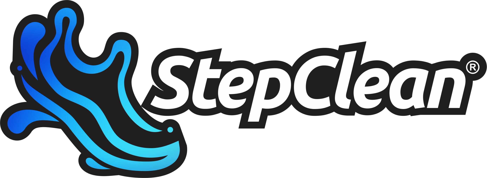
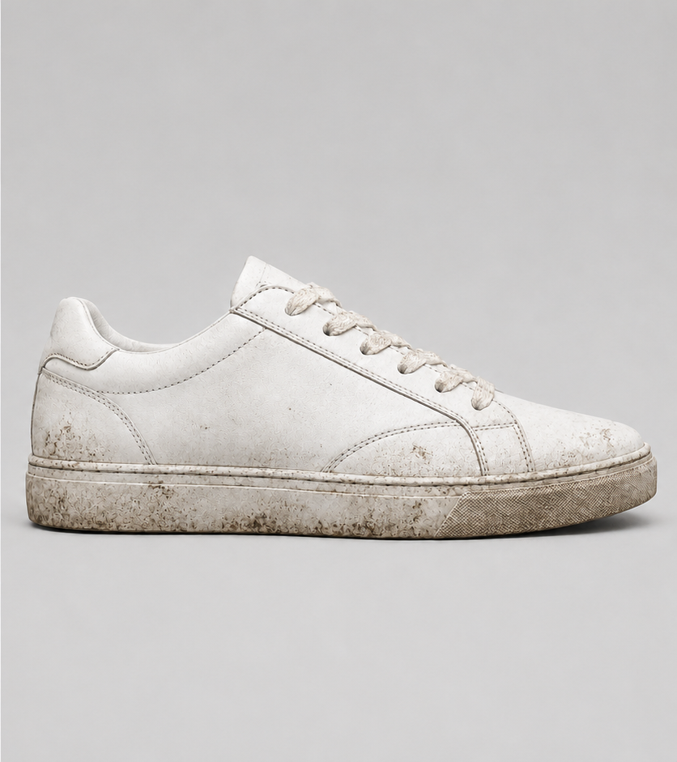
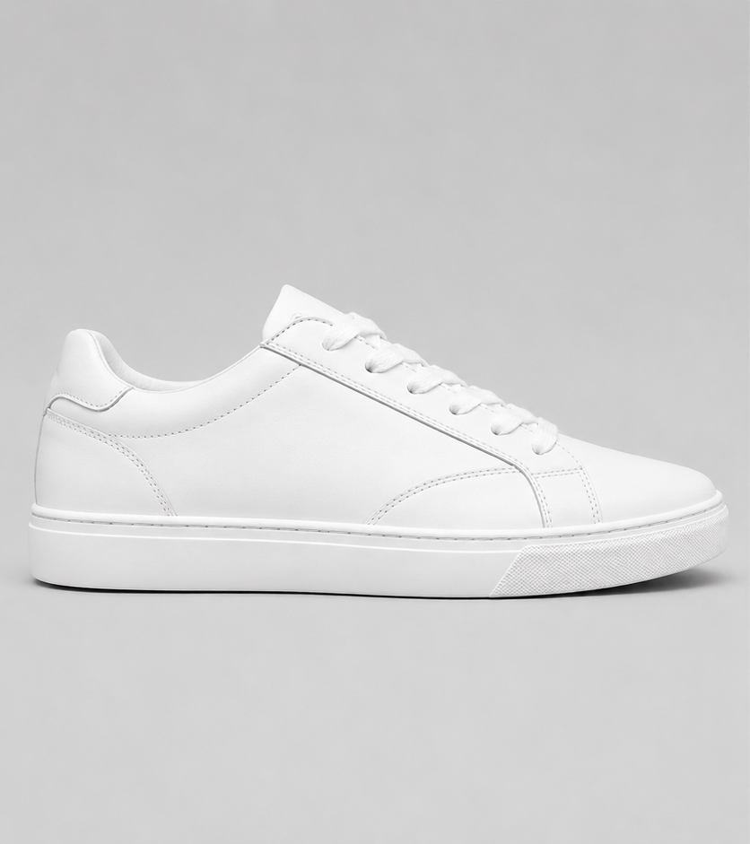

Lavagem Premium
Limpeza interna e externa com cuidado manual e produtos adequados para cada material.

Lavanderia premium de tênis em Taubaté
Lavagem premium, remoção de manchas e amarelados, impermeabilização, hidratação e repintura para devolver vida, higiene e presença aos seus sneakers.


Antes de trocar, renove.
O que fazemos
Limpeza interna e externa com cuidado manual e produtos adequados para cada material.
Tratamento focado em manchas, sujeiras difíceis e marcas que prejudicam o visual do tênis.
Processo voltado para reduzir o aspecto amarelado e envelhecido em partes claras.
Proteção contra respingos, sujeiras leves e desgaste do uso diário.
Cuidado para materiais que precisam recuperar aspecto, toque e conservação.
Acabamento estético para devolver presença visual e renovar detalhes do seu tênis.
Resultado visual
Cada par passa por uma avaliação individual. Envie fotos pelo WhatsApp para sabermos o material, o nível de sujeira, manchas, amarelados e o tratamento mais indicado.
Avaliamos sujeira, material, solado, tecido, camurça, amarelado e possíveis riscos no tratamento.
Lavagem, higienização, hidratação, impermeabilização ou repintura conforme a necessidade do par.
O objetivo é devolver higiene, presença e melhor aparência ao seu sneaker favorito.
Como funciona
Mande imagens do seu tênis pelo WhatsApp para avaliarmos o estado do par.
Indicamos o tratamento ideal conforme material, manchas e nível de desgaste.
Seu sneaker passa pelo processo de limpeza, higienização e acabamento.
Você recebe seu tênis limpo, tratado e pronto para voltar para o corre.
Por que escolher a StepClean?
Dúvidas frequentes
O valor depende do material, estado do tênis e tipo de tratamento. Envie fotos pelo WhatsApp para receber uma avaliação.
Sim. A StepClean realiza tratamento para reduzir amarelados e recuperar a aparência visual.
Sim, mas esses materiais exigem avaliação prévia, pois são mais sensíveis.
Sim. Esse é o melhor caminho para indicarmos o tratamento correto e o orçamento.
Seu sneaker merece uma segunda vida.
Atendimento rápido pelo WhatsApp da StepClean Taubaté.